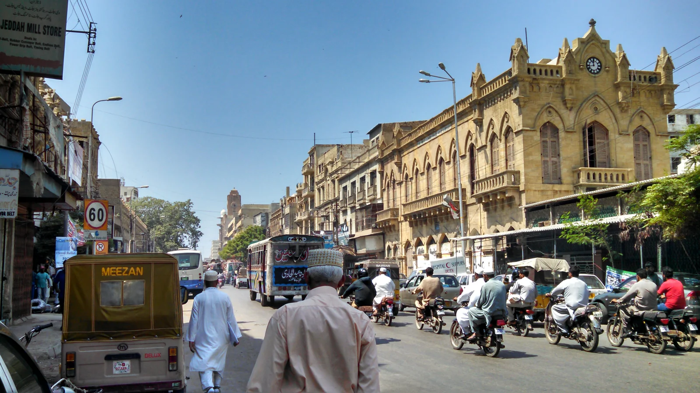

Photo: Kabir118 · Wikimedia Commons source · CC BY-SA 3.0. Converted to WebP, recompressed and proportionally resized by She Builds; no cropping or color changes. This image adaptation is licensed CC BY-SA 3.0. Photograph taken in 2014, before completion of the later restoration.
A collection of perspectives
Welcome back
Discover the women shaping the spaces around us.
Loading sign-in. If this message remains, check your connection and reload.